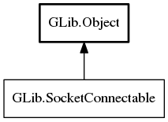

SocketConnectable
Object Hierarchy:
Description:
Objects that describe one or more potential socket endpoints implement SocketConnectable.
Callers can then use enumerate to get a SocketAddressEnumerator to try out each socket address in turn until one succeeds, as shown in the sample code below.
MyConnectionType *
connect_to_host (const char *hostname,
guint16 port,
GCancellable *cancellable,
GError **error)
{
MyConnection *conn = NULL;
GSocketConnectable *addr;
GSocketAddressEnumerator *enumerator;
GSocketAddress *sockaddr;
GError *conn_error = NULL;
addr = g_network_address_new (hostname, port);
enumerator = g_socket_connectable_enumerate (addr);
g_object_unref (addr);
// Try each sockaddr until we succeed. Record the first connection error,
// but not any further ones (since they'll probably be basically the same
// as the first).
while (!conn && (sockaddr = g_socket_address_enumerator_next (enumerator, cancellable, error))
{
conn = connect_to_sockaddr (sockaddr, conn_error ? NULL : &conn_error);
g_object_unref (sockaddr);
}
g_object_unref (enumerator);
if (conn)
{
if (conn_error)
{
// We couldn't connect to the first address, but we succeeded
// in connecting to a later address.
g_error_free (conn_error);
}
return conn;
}
else if (error)
{
/// Either initial lookup failed, or else the caller cancelled us.
if (conn_error)
g_error_free (conn_error);
return NULL;
}
else
{
g_error_propagate (error, conn_error);
return NULL;
}
}
All known implementing classes:

Namespace: GLib
Package: gio-2.0
Content:
Methods:
Inherited Members:
All known members inherited from class GLib.Object